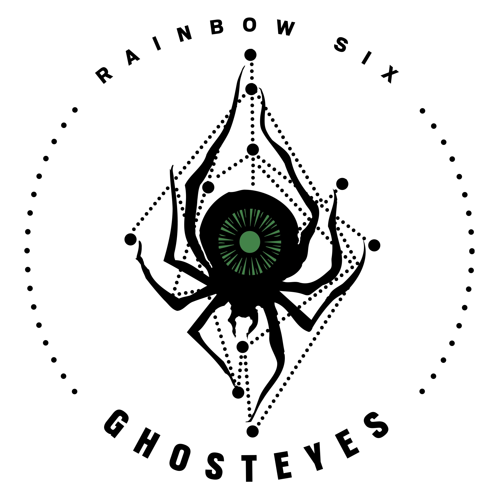

Név: Max Goose
Születési dátum:1989 Február 15.
Születési hely: Portland, Ausztrália
“C’mon, I'm not here to fuck spiders.”
A 10. év után Max Goose jelentkezett az Ausztrál Védelmi Erők Akadémiájára, később pedig a Harc és Biztonság területén dolgozott. Egy gyalogezredhez csatlakozott, amely sármotorokat és terepjáró járműveket használt felderítési műveleteik során. Goose kiválóan teljesített a szárazföldi navigációban, és a két keréken haladó szakértővé vált rajtaütésekben, felderítésekben és konvoj műveletekben. A Catalyst Műveletet követően kiválasztották, hogy csatlakozzon a Speciális Légi Szolgálat Ezredhez (SASR), feltéve, ha átmegy a kiválasztáson, és tartózkodik a visszavágástól. Speciális terepjáró képességei és gyors gondolkodása nagyra volt értékelve, bár vezetési stílusa néha meggondolatlannak tűnt. Részt vett az Slipper Műveletben, és szolgált, amíg a művelet be nem fejeződött. Később a Nemzeti Vészhelyzeti Éremben részesült a tűzoltók megmentéséért az Esperance bozóttüzek alatt. Goose egy kiszámítható vállalkozó szellemű merész, aki szeretné kipróbálni az előkészületben lévő katonai lopakodó motorokat, de szerinte nincs nagyobb megtiszteltetés annál, mint amikor megkérik, hogy csatlakozzon a Rainbow Six-hez.
Szervezet: Ghosteyes 